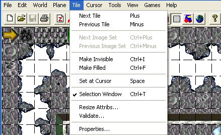

| Tile Menu  |
|---|
| Next Tile |
| Goes to the next tile in the "Tile Selection Window". |
| Previous Tile |
| Goes to the previous tile in the "Tile Selection Window". |
| Make Invisible (Ctrl+I or Del) |
| Changes the currently selected tile in the level to be invisible. |
| Make Filled (Ctrl+F) |
| Changes the currently selected tile in the level to be "filled" with a tile that uses the fill color defined in the "Plane | Properties" menu. Note: This feature was never used in Gruntz. |
| Set at Cursor (Spacebar) |
| This feature will change the current tile underneath the current cursor position with the tile currently selected in the "Tile Selection Window" or with the tile that was last copied into the "clipboard". Note: a tile can be copied into the "clipboard" by holding down the Ctrl key while left-clicking on any tile that you would like to copy. |
| Selection Window (Ctrl+T) |
| This feature is used to display or hide the "Tile Selection Window". This is a "checkmark/uncheckmark" type menu item. |
| Resize Attribs |
| I have no idea what this feature is used for. I have never used it on any game that we (Monolith Productions, Inc.) have developed (Claw, Get Medieval, or Gruntz) Validate… |
| This will check your level for invalid tiles. This should never be required, because the shipped game should never have invalid tiles. Note: An invalid tile is a tile that is not 32x32 pixels or 64x64 pixels. |
| Properties… |
| This feature allows the user to modify the properties for each tile. Note: This will only change the properties for the tiles in the current level. Important: If you are using the "template levels", do not modify the tile properties for ANY tiles since they all have already been specified. If you are starting a level from scratch, you will need to set the tile properties for approximately 300 tiles, which is why I recommend using a "template level". |